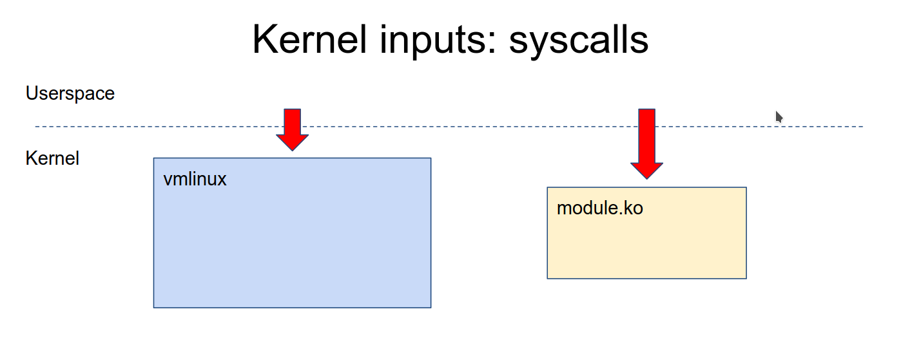
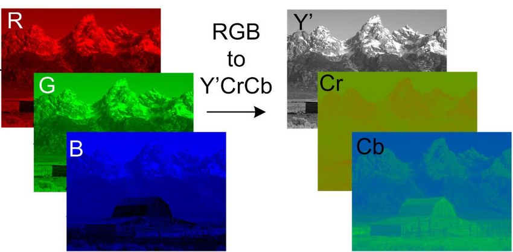
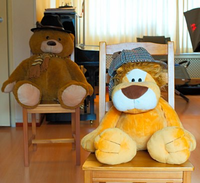

Introduction
Linux Kernel Debugging
Chapter contains docs for debugging the Linux kernel.
Understanding Linux kernel Oops
Kernel panic is when there is a fatal error from which the kernel cannot recover. So it forces the system into controlled system hang/reboot.
There are 2 types of panics
- Hard panics (Aiee!)
- Soft panics (Oops!)
Oops
On faulty code execution or when an exception occurs kernel throws Oops.
When Oops occurs it dumps the message on the console. Message contains the CPU registers & the processor status of when the Oops occured.
The process that triggered the Oops gets killed ungracefully. There is a chance that the system may not resume from the Oops.
Understanding Oops Dump
We will be using the sample Oops dump below, this oops is generated from the kernel panic module from the Task of the mentorship.
[ 96.106469] panic_msg: loading out-of-tree module taints kernel.
[ 96.106525] panic_msg: module verification failed: signature and/or required key missing - tainting kernel
[ 96.106710] Panic module init.
[ 96.106713] BUG: kernel NULL pointer dereference, address: 0000000000000001
[ 96.106718] #PF: supervisor read access in kernel mode
[ 96.106721] #PF: error_code(0x0000) - not-present page
[ 96.106723] PGD 0 P4D 0
[ 96.106728] Oops: 0000 [#1] SMP NOPTI
[ 96.106732] CPU: 1 PID: 7403 Comm: insmod Kdump: loaded Tainted: G OE 5.15.0-72-generic #79~20.04.1-Ubuntu
[ 96.106737] Hardware name: ASUSTeK COMPUTER INC. ROG Zephyrus G14 GA401IH_GA401IH/GA401IH, BIOS GA401IH.212 03/14/2022
[ 96.106740] RIP: 0010:panic_module_init+0x15/0x1000 [panic_msg]
[ 96.106749] Code: Unable to access opcode bytes at RIP 0xffffffffc1470feb.
[ 96.106752] RSP: 0018:ffffaa368299bbb8 EFLAGS: 00010246
[ 96.106755] RAX: 0000000000000012 RBX: 0000000000000000 RCX: 0000000000000027
[ 96.106758] RDX: 0000000000000000 RSI: ffffaa368299ba00 RDI: ffff88d4d7460588
[ 96.106761] RBP: ffffaa368299bbb8 R08: ffff88d4d7460580 R09: 0000000000000001
[ 96.106763] R10: 696e6920656c7564 R11: 6f6d2063696e6150 R12: ffffffffc1471000
[ 96.106766] R13: ffff88cfd734d390 R14: 0000000000000000 R15: ffffffffc1884000
[ 96.106768] FS: 00007f241ee73740(0000) GS:ffff88d4d7440000(0000) knlGS:0000000000000000
[ 96.106772] CS: 0010 DS: 0000 ES: 0000 CR0: 0000000080050033
[ 96.106775] CR2: ffffffffc1470feb CR3: 000000023ecac000 CR4: 0000000000350ee0
[ 96.106778] Call Trace:
[ 96.106780] <TASK>
[ 96.106784] do_one_initcall+0x48/0x1e0
[ 96.106791] ? __cond_resched+0x19/0x40
[ 96.106797] ? kmem_cache_alloc_trace+0x15a/0x420
[ 96.106804] do_init_module+0x52/0x230
[ 96.106810] load_module+0x1294/0x1500
[ 96.106819] __do_sys_finit_module+0xbf/0x120
[ 96.106823] ? __do_sys_finit_module+0xbf/0x120
[ 96.106830] __x64_sys_finit_module+0x1a/0x20
[ 96.106835] do_syscall_64+0x5c/0xc0
[ 96.106840] ? exit_to_user_mode_prepare+0x3d/0x1c0
[ 96.106845] ? syscall_exit_to_user_mode+0x27/0x50
[ 96.106849] ? __x64_sys_mmap+0x33/0x50
[ 96.106853] ? do_syscall_64+0x69/0xc0
[ 96.106857] ? syscall_exit_to_user_mode+0x27/0x50
[ 96.106861] ? __x64_sys_read+0x1a/0x20
[ 96.106865] ? do_syscall_64+0x69/0xc0
[ 96.106870] ? irqentry_exit+0x1d/0x30
[ 96.106874] ? exc_page_fault+0x89/0x170
[ 96.106879] entry_SYSCALL_64_after_hwframe+0x61/0xcb
[ 96.106885] RIP: 0033:0x7f241efa0a3d
[ 96.106889] Code: 5b 41 5c c3 66 0f 1f 84 00 00 00 00 00 f3 0f 1e fa 48 89 f8 48 89 f7 48 89 d6 48 89 ca 4d 89 c2 4d 89 c8 4c 8b 4c 24 08 0f 05 <48> 3d 01 f0 ff ff 73 01 c3 48 8b 0d c3 a3 0f 00 f7 d8 64 89 01 48
[ 96.106894] RSP: 002b:00007ffdbfab5128 EFLAGS: 00000246 ORIG_RAX: 0000000000000139
[ 96.106899] RAX: ffffffffffffffda RBX: 000055fd2f8b4780 RCX: 00007f241efa0a3d
[ 96.106903] RDX: 0000000000000000 RSI: 000055fd2e243358 RDI: 0000000000000003
[ 96.106906] RBP: 0000000000000000 R08: 0000000000000000 R09: 00007f241f0a3180
[ 96.106909] R10: 0000000000000003 R11: 0000000000000246 R12: 000055fd2e243358
[ 96.106912] R13: 0000000000000000 R14: 000055fd2f8b7b40 R15: 0000000000000000
[ 96.106918] </TASK>
Let's try to understand the Oops dump.
-
BUG: kernel NULL pointer dereference, address: 0000000000000001- This indicates why the kernel crashed i.e it was because of NULL pointer dereference.
-
IP:- IP shows the address of the instruction pointer. The above dump does not have IP. So in some cases IP maybe missing.
-
Oops: 0000 [#1] SMP NOPTI-
0000- is the error code value in Hex , where- bit 0 - 0 means no page found, 1 means protection fault
- bit 1 - 0 means read, 1 means write
- bit 2 - 0 means kernelspace, 1 means userspace
The above code denotes that while reading there was no page found in kerenelspace i.e NULL pointer dereference.
-
[#1]- Number of Oops occured. There can be multiple Oops as cascading effect. 1 Oops occured.
-
-
CPU: 1 PID: 7403 Comm: insmod Kdump: loaded Tainted: G-
CPU 1- Which CPU the error occured -
Tainted: G- Tainted flag- P, G — Proprietary module has been loaded.
- F — Module has been forcibly loaded.
- S — SMP with a CPU not designed for SMP.
- R — User forced a module unload.
- M — System experienced a machine check exception.
- B — System has hit bad_page.
- U — Userspace-defined naughtiness.
- A — ACPI table overridden.
- W — Taint on warning.
Ref: https://github.com/torvalds/linux/blob/master/kernel/panic.c
This shows that the proprietary module has been loaded.
-
-
RIP: 0010:panic_module_init+0x15/0x1000 [panic_msg]RIP- CPU register containing addr of the instruction getting executed.0010- Code segment register value.panic_module_init+0x15/0x1000-+ offset/ length
-
CPU register contents
RSP: 0018:ffffaa368299bbb8 EFLAGS: 00010246 RAX: 0000000000000012 RBX: 0000000000000000 RCX: 0000000000000027 RDX: 0000000000000000 RSI: ffffaa368299ba00 RDI: ffff88d4d7460588 RBP: ffffaa368299bbb8 R08: ffff88d4d7460580 R09: 0000000000000001 R10: 696e6920656c7564 R11: 6f6d2063696e6150 R12: ffffffffc1471000 R13: ffff88cfd734d390 R14: 0000000000000000 R15: ffffffffc1884000 FS: 00007f241ee73740(0000) GS:ffff88d4d7440000(0000) knlGS:0000000000000000 CS: 0010 DS: 0000 ES: 0000 CR0: 0000000080050033 CR2: ffffffffc1470feb CR3: 000000023ecac000 CR4: 0000000000350ee0 -
Stack:- This is the stack trace.- But as you can see it is missing from the dump. This might be because the kernel is not configured correctly, but I am currently unable to get the exact config which enables stack.
-
Code: 5b 41 5c c3 66 0f 1f 84 00 00 00 00 00 f3 0f 1e fa 48 89 f8 48 89 f7 48 89 d6 48 89 ca 4d 89 c2 4d 89 c8 4c 8b 4c 24 08 0f 05 <48> 3d 01 f0 ff ff 73 01 c3 48 8b 0d c3 a3 0f 00 f7 d8 64 89 01 48- This is a hex-dump of the section of machine code that was being run at the time the Oops occurred.
Debugging the Oops
The aim here is to find out the Address where the Oops occured, so that we can use GDB to get the exact line of the code where the kernel Oops occured.
Method 1: Using the Oops dump + GDB
Logic behind this method
- RIP/PC - Instruction pointer or Program counter will give the instruction address and offset. Addresss + offset = Instruction Addr where Oops occured.
- Use GDB to dissassemble the function (this we get in the RIP line of Oops dump)
- Once we get the address then use GDB
listto get to the line of the code.
Steps:
- Load the module in GDB
- Add the symbol-file in GDB
- Disassemble the function mentioned in the
RIPsection in the above dump. - To get the exact line we use (RIP instruction addr + offset)
- Then we run list *(RIP instruction addr + offest) to give the offending code.
Honestly this method seems to be a bit complex, a simpler way would be to use
addr2line to convert the address to line. For more see the video
- https://youtu.be/X5uygywNcPI?t=1159
Method 2: Using System.map + GDB
System.map is the list of symbols and their addr in the kernel.
Logic behind this method
- Using the function name from the Oops dump, get the symbol address from the System.map. we call it Fun_Addr
- Get the exact instruction address by Fun_Addr + Offset (from oops dump)
- Dissassemble the function to get to the exact instruction where it failed.
- To get to the line number use GDB
list& pass it Fun_Addr + Offset.
Steps
- Identify the PC/RIP (Addr & offset) from the Oops dump.
- Identify the function where the Oops occured from the Oops dump.
- Get the exact instruction address by Fun_Addr + Offset (from oops dump)
- Dissassemble the function to get to the exact instruction where it failed.
- To get to the line number use GDB
list& pass it Fun_Addr + Offset.
Ways of Dissassembling
- Using
objdump - Using
gdb
objdump
objdump -D -S --show-raw-insn --prefix-addresses --line-numbers vmlinux
gdb
# Run gdb
gdb –silent vmlinux
# Inside gdb run the command
dissassemble <function-name>
TLDR; Summary

References
Ref: https://www.opensourceforu.com/2011/01/understanding-a-kernel-oops/ Ref: https://sanjeev1sharma.wordpress.com/tag/debug-kernel-panics/
Tools and Techniques to Debug an Embedded Linux System
Process of debugging
- Understand the problem.
- Reproduce the problem.
- Identify the root cause.
- Apply the fix.
- Test it. If fixed, celebrate! If not, go back to step 1.
Types of problems in Software
We can classify them into 5 major categories
- Crash. - Fatal exceptions
- Lockup/Hang. - Race conditions, Deadlocks
- Logic/implementation. - Logical errors
- Resource leakage. - Memory leaks
- (Lack of) performance. - Program is not performing as expected.
Tools & Techniques available for developers to solve these problems
- Our brain (aka knowledge).
- Post mortem analysis (logging analysis, memory dump analysis, etc).
- Tracing/profiling (specialized logging).
- Interactive debugging (eg: GDB).
- Debugging frameworks (eg: Valgrind).
Post mortem analysis
This type of analysis is done using the information exported by the system i.e logs, memory dumps etc.
For Kernel Crashes
Method1: addr2line
-
Get the address from the memory dump. address of the
pc(program counter) can be used to get the line where kernel crashed.[ 17.201436] PC is at storage_probe+0x60/0x1a0 [ 17.205810] LR is at storage_probe+0x48/0x1a0 [ 17.210175] pc : [<c06a21cc>] lr : [<c06a21b4>] psr: 60000013 -
You need the
vmlinuxfile which is in ELF format with debug infofile vmlinux vmlinux: ELF 32-bit LSB executable, ARM, EABI5 version 1 (SYSV), statically linked, BuildID[sha1] ca2de68ea4e39ca0f11e688a5e9ff0002a9b7733, with debug_info, not stripped -
Run the addr2line command with these inputs
addr2line -f -p -e vmlinux 0xc06a21ccThis will give you the line number where the kernel crashed.
for eg:
storage_probe at /opt/labs/ex/linux/drivers/usb/storage/usb.c:1118
Method2: gdb list
-
Get the function name + offset from the memory dump.
[ 17.201436] PC is at storage_probe+0x60/0x1a0 [ 17.205810] LR is at storage_probe+0x48/0x1a0 [ 17.210175] pc : [<c06a21cc>] lr : [<c06a21b4>] psr: 60000013i.e
storage_probe+0x60 -
You need the
vmlinuxfile which is in ELF format with debug infofile vmlinux vmlinux: ELF 32-bit LSB executable, ARM, EABI5 version 1 (SYSV), statically linked, BuildID[sha1] ca2de68ea4e39ca0f11e688a5e9ff0002a9b7733, with debug_info, not stripped -
Run gdb on the vmlinux file, inside gdb run the command
(gdb) list *(storage_probe+0x60)This will show you the line where the kernel crashed.
For Userspace Crashes
Use the core dump from the segfault to find the line at which the segfault occurred.
-
Set the system limits to unlimited
# ulimit -c unlimited -
Run the program untill it crashes, the crash will generate a file called
corewhich contains the core dump. -
Run the gdb on the core file and the program with debug symbols
gdb <program-here> -c core -
In gdb run the command
listto go to the line where the program crashed.pto print the specific variables.
Tracing
Tracing is a special form of logging, where data about the state and execution of a program (or the kernel) is collected and stored for runtime (or later) analysis.
Using print() or printk() statements to log the state and variables is also a form of tracing.
For kernel crashes
-
for kernel tracing we need to configure the kernel tracing options
zcat /proc/config.gz | grep TRACER=y CONFIG_NOP_TRACER=y CONFIG_HAVE_FUNCTION_TRACER=y CONFIG_HAVE_FUNCTION_GRAPH_TRACER=y CONFIG_CONTEXT_SWITCH_TRACER=y CONFIG_GENERIC_TRACER=y CONFIG_FUNCTION_TRACER=y CONFIG_FUNCTION_GRAPH_TRACER=y CONFIG_STACK_TRACER=y CONFIG_IRQSOFF_TRACER=y CONFIG_SCHED_TRACER=y CONFIG_HWLAT_TRACER=y CONFIG_OSNOISE_TRACER=y CONFIG_TIMERLAT_TRACER=y -
Mount the tracefs into the fs
mount -t tracefs tracefs /sys/kernel/tracing/ -
Record the traces of the function getting executed
trace-cmd record -p function_graph -F <module>/<sysfs trigger to a module> -
Generate the report of the tracing
trace-cmd report > trace.log -
Examine the trace.log to see the traces of the function.
Note: This is dynamic tracing i.e the tracing is enabled at runtime as long as the kernel is compiled with the correct configuration.
For userspace crashes
Method 1: strace
Using strace we can trace all the system calls the program is running to debug the program.
Run a userspace program with strace
# strace <program>
Method 2: Uprobe
This is used to trace the functions in the program.
-
Kernel needs to be configured with the below options
zcat /proc/config.gz | grep CONFIG_UPROBE CONFIG_UPROBES=y CONFIG_UPROBE_EVENTS=y -
Add the tracepoints to all the functions
# for f in `perf probe -F -x <program>`; \ do perf probe -q -x <program> $f; done -
List the tracepoints to know the tracepoint names
# perf probe -l | tee -
Run the application and capture the tracepoints.
# perf record -e <tracepoint_name>:* -aR -- <program> <args> -
Run the command to parse the trace
perf script | tee
Interactive Debugging
An interactive debugging tool allows us to interact with the application at runtime. It can execute the code step-by-step, set breakpoints, display information (variables, stack, etc), list function call history (backtrace), etc.
GDB is the go to tool for Interactive debugging.
For kernel space
Note: If running on embedded, you need a gdbserver running on the target device and a gdb client on the host device.
-
Enable KGDB in the kernel
# zcat /proc/config.gz | grep ^CONFIG_KGDB CONFIG_KGDB=y CONFIG_KGDB_HONOUR_BLOCKLIST=y CONFIG_KGDB_SERIAL_CONSOLE=yKGDB has registered serial console as the port for communication. But we can use kgdb/agent-proxy to forward text console over IP.
Details on how to connect can be found here - https://kernel.googlesource.com/pub/scm/utils/kernel/kgdb/agent-proxy/+/refs/heads/master/README.TXT
-
On target machine, Put the kernel in debugging mode
# Enable the serial port for kgdb communication # echo ttymxc0 > /sys/module/kgdboc/parameters/kgdboc # Put the kernel in debug mode # echo g > /proc/sysrq-trigger -
On host machine, run gdb with the kernel ELF
gdb vmlinux -tui-tuioption opens the TUI which shows the code and line number in gdb
-
In gdb prompt, run the command to connect to the target machine
(gdb) target remote localhost:5551 -
This will connect and open up the gdb for debugging, now you can set breakpoints get backtraces using gdb commands.
For userspace crashes
Note: If running on embedded, you need a gdbserver running on the target device and a gdb client on the host device.
-
Start the gdbserver, on target device
gdbserver :1234 <program> -
On the host device, run gdb with the program in ELF format
gdb <program> -tui -
In gdb prompt, connect to the target device
(gdb) target remote <IP>:1234 -
Now we can set breakpoints and see the backtrace of the program running on the target machine.
Debugging frameworks
Collection of tools when used to debug linux systems are called debugging frameworks.
Kernel has several debugging frameworks to identify memory leaks, lockups, etc (see the "Kernel Hacking" configuration menu)
In user space, there is Valgrind for debugging memory leaks, race conditions and profiling etc.
For kernel crashes
-
Enable the detections in the kernel configuration
# zcat /proc/config.gz | grep "CONFIG_SOFTLOCKUP_DETECTOR\|CONFIG_DETECT_HUNG_TASK" CONFIG_SOFTLOCKUP_DETECTOR=y CONFIG_DETECT_HUNG_TASK=y -
Once enabled, when something hangs for 30s or more, kernel will throw an oops.
-
After this we can use the steps in post mortem analysis to debug.
For userspace crashes
We use valgring to check for memory leaks, profiling , etc
For eg:
valgrind --leak-check=full <program>
This will check for leaks etc..
Which tool to use while debugging ?
This depends on what type of problem you are debugging.
References
Ref: https://www.youtube.com/watch?v=Paf-1I7ZUTo
Dynamic Program analysis
What is Dynamic program analysis ?
It is analysis of the properties of a running program. The properties are
- Bugs
- performance
- code coverage
- data flow
These properties are valid for single execution
What is static program analysis ?
It is analysis of properties of program code. These properties are valid for all execution.
Why Dynamic program analysis is better than static ?
-
Static program analysis is better for True positives, but it also generates alot of false positives.
-
Dynamic program analysis is better to avoid false positives, hence the reports are more true positives than static.
The problem with dynamic program analysis is that the coverage is not that good.
DIY Tools
Kernel provides some tools for dynamic program analysis, Enable these configurations in the kernel config and kernel will analyse it for us. If anything fails then we get a bug report in the console.
- CONFIG_DEBUG_LIST=y , adds debug checks for link listss
- CONFIG_FORTIFY_SOURCE=y, finds out of bounds access for simple codes
- BUG_ON(condition) Check if your assumptions in code are true.
- WARN_ON(condition) Check if your assumptions in code are true.
- scrpits/decode_stacktrace.sh - this is usefull for finding line numbers from kernel oops.
There are more configs which can be loaded full list is here - https://events.linuxfoundation.org/wp-content/uploads/2022/10/Dmitry-Vyukov-Dynamic-program-analysis_-LF-Mentorship.pdf (see page 23-25)
KASAN (Kernel Address Sanatizer)
It is used to detect these type of bugs in the kernel
- Out-Of-Bounds
- Use-After-Free
- Heap, stack, globals
It can be enabled in the kernel by setting config CONFIG_KASAN=y
How KASAN works ?
-
Shadow bytes For every 8 bytes of kernel memory, it allocates 1 shadow byte. This shadow byte contains 0 if all bytes can be access (good bytes), 7 if 1 byte out of 8 bytes cannot be accessed (bad byte) and -1 if all the bytes cannot be accessed.
The shadow bytes are stored in a virtual memory section called KASAN shadow.
-
Red-zones around heap objects (to detect out-of-bound errors)

If we try to access the redzones then bug is triggered.
-
Quarantine for heap objects (to detect Use-After-Free)
This delays the reuse of heap blocks, so if the kernel tries to access this block in quarantine then it is Use-After-Free bug.
-
Compiler instrumentation: shadow check before memory access
Compiler adds a code check before any memory access which checks the shadow byte is appropriate (i.e 0 for 8 byte access & 4 for 4 byte access), if incorrect then it is a bug.
This has an overhead, causing 2x slowdown and 2x more memory usage.
Conclusion
In kernel development,
- enable DEBUG_XXX, LOCKDEP, KASAN kernel configuration files
- For new code, try to insert BUG_ON / WARN_ON
- add/run kernel tests
- Use scripts/decode_stacktrace.sh to debug
Fuzzing Linux Kernel
What is Fuzzing ?
Feeding random inputs untill program crashes.

for Fuzzing we need to answer these questions
- How do we execute the program ?
- How do we inject inputs ?
- How do we generate inputs ?
- How do we detect program crashes ?
- How do we automate the whole process ?
except for #3 all others depend on the program that we are Fuzzing.
How do we generate inputs ?
Just generating random data does not always work,
for example: if we are fuzzing an xml parser, the just to generate header
<xml it will take ~2^32 guesses.
So random data does not always work
So there are 3 approaches to generate better inputs
- Structured inputs (structure-aware-fuzzing)
- We build a grammar for inputs and fuzz them.
- Guided generation (coverage-guided-fuzzing)

- We use an existing pool of corpus input or a random input
- We mutate (change) it
- We use it as an input and execute the program
- We check if covers new code ?
- If yes then we add it to Corpus inputs pool
- else we start again from random input.
- Collecting corpus samples and mutating them
- We can scrape the internet and collect inputs.
- These inputs can be mutated and fed into the program.
These approaches can be combined with each other to create new inputs for fuzzing.
Kernel fuzzing
How to inject inputs to kernel ?
To inject inputs we need to understand what inputs does kernel have.
What kind of inputs does kernel have
-
syscalls 
- We can use program which calls syscalls to inject syscall input.
-
external inputs i.e usb dev, network packets, firmware etc.

-
We can use userspace or hypervisor/emulator to give external inputs
for ex:
- for usb we can use
/dev/raw-gadget+ Dummy UDC - for network we can use
/dev/tun
- for usb we can use
-
How to generate inputs for kernel ?
Kernel does not accept data as inputs it accepts syscalls.
Most syscalls are used as API i.e
- It is always a sequence of calls
- Argumets to the calls are structured
- Return values or struct are used as inputs in next calls
sequence of calls in the input to the kernel
API-aware fuzzing
- inputs are api call sequences
- these are generated and mutated accordingly
External inputs are also similar to API's.
So most common input structures are
- API
- API with callbacks
- Scripts
- USB-like stuff
Tools used for Fuzzing the kernel
There are other tools but most common are
- Trinity - finds less bugs but easier to deploy
- Syzkaller - goes deeper but finds more bugs and easier to extend
Approaches to fuzzing kernel
- Building kernel code as userspace program and fuzzing that
- Works for code that is separable from kernel, but some kernel code cannot be separated.
- Reusing a userspace fuzzer
- Works for fuzzing blob-like inputs, but most kernel inputs are not blobs
- Using syzkaller
- Good for fuzzing kernel API
- Writing a fuzzer from scratch
- Only benefits when the interface is not API-based.
Tips for using syzkaller
-
Don't just fuzz mainline with the default config
- fuzz with different configs
- fuzz a small number of related syscalls i.e fuzz 3 or 4 syscall related to networking
- Fuzz distro kernels
-
Build your fuzzer on top of syzkaller, extend syzkaller rather than writing your own fuzzer.
-
Reuse parts of the syzkaller for your fuzzer.
How to use syzkaller
Syzkaller is an unsupervised kernel fuzzer that uses both structured fuzzing & coverage-guided fuzzing techniques to apply fuzzing to kernel syscalls.
How it works

Manager controls the test system, spwans vm's with fuzzers inside them which generate small programs which invoke syscalls.
VM's communication using RPC and log the coverage achieved and trace information which is stored in the database.
Describing syscalls
Syzkaller has a separate language for Describing syscalls.
For example: the open() syscall below
int open(const char *pathname, int flags, mode_t mode);
is described in syzkaller as:
open(file ptr[in, filename], flags flags[open_flags], mode flags[open_mode]) fd
-
file ptr[in, filename]: the first argument, called file, is an input pointer containing a filename string. -
flags flags[open_flags]: the flags argument is any of the flags defined at open_flags array open_flags = O_WRONLY, O_RDWR, O_APPEND, ... -
mode flags[open_mode]: mode argument is any of the flags defined at open_mode array open_mode = S_IRUSR, S_IWUSR, S_IXUSR, ... -
fd: the return value will be stored here, to be later used on other syscalls.for example:
read(fd fd, buf buffer[out], count len[buf]) write(fd fd, buf buffer[in], count len[buf])
If instead of fd (file descriptior) we want to fuzz integer values from 0 to 500
then we use syntax int64[0:500]
syzkaller provides generic descrption for ioctl()
ioctl(fd fd, cmd intptr, arg buffer[in])
and also provides specific ones like
ioctl$DRM_IOCTL_VERSION(fd fd_dri, cmd const[DRM_IOCTL_VERSION], arg ptr[in, drm_version])
ioctl$VIDIOC_QUERYCAP(fd fd_video, cmd const[VIDIOC_QUERYCAP], arg ptr[out, v4l2_capability])
See the refernce below for more.
Ref: https://github.com/google/syzkaller/blob/master/docs/syscall_descriptions_syntax.md
Setting up syzkaller
Follow the steps given here to setup syzkaller - https://github.com/google/syzkaller/blob/master/docs/linux/setup.md
Tips for running syzkaller
- Use different defconfigs
- Limit the syscalls to 3-4 chosen, by adding the below in config.config
"enable_syscalls": [ "ptrace", "getpid" ],
Fuzzing your patch changes in syzkaller
If you make a change in kernel and want to fuzz your changes in syzkaller, this can be done by following the steps below:
- Modify the kernel and compile.
- Add a new syscall description in syzkaller and generate fuzzers for it.
- Run the syzkaller with new syscall
Steps
-
Modify the kernel code, for eg : we will modify ptrace syscall
diff --git a/kernel/ptrace.c b/kernel/ptrace.c index 43d6179508d6..8e4e92931d5f 100644 --- a/kernel/ptrace.c +++ b/kernel/ptrace.c @@ -1245,6 +1245,9 @@ SYSCALL_DEFINE4(ptrace, long, request, long, pid, unsigned long, addr, struct task_struct *child; long ret; + if (pid == 0xdeadbeaf) + BUG(); + if (request == PTRACE_TRACEME) { ret = ptrace_traceme(); if (!ret)The compile the kernel with modified code.
-
Navigate to the syzkaller dir and modify the file
sys/linux/sys.txtptrace$broken(req int64, pid const[0xdeadbeaf]) -
Generate fuzzer for the new syscall
make bin/syz-extract ./bin/syz-extract -os=linux -sourcedir=$KSRC -arch=amd64 sys.txt make generate make- Note: I was not able to do this step because it gives errors.

- Note: I was not able to do this step because it gives errors.
-
Enable the newly added syscall in config.cfg
"enable_syscalls": [ "ptrace$broken"] -
Run syzkaller
./bin/syz-manager -config=config.cfg
Fuzzing complex subsystems in kernel
- Syzkaller comes with set of system calls for linux - https://github.com/google/syzkaller/tree/master/sys/linux
- Some subsystems are better supported (like USB, socket-related syscalls) than others.
- To fuzz these complex sub-systems, we use a combination of techniques like,
- Using syzkaller resources to, define an order to syscalls and to store the device state and data.
- Using udev (in rfs) to symlink drivers so that a particular driver is
targeted by the syzkaller. (Syzkaller may not be able to send syscalls
to
/dev/video0so syzkaller sends it to/dev/vim2mwhich is symlinked to video0 ) - Using pseudo-syscalls - Allows syzkaller to run custom c functions defined as pseudo-syscalls.
How to reproduce bugs from syzkaller
-
Navigate to the syzkaller bug link and download
- disk image
- kernel image
- C repro, save as
.cfile

-
Extract the disk image and kernel image
$ xz --decompress <disk-image> $ xz --decompress <kernel-image> -
Start VM, by running commands
$ export KERNEL_IMG=<full-path-to-kernel-image> $ export RFS_IMG=<full-path-to-disk-image> $ qemu-system-x86_64 \ -m 2G \ -smp 2 \ -kernel ${KERNEL_IMG} \ -append "console=ttyS0 root=/dev/sda1 earlyprintk=serial net.ifnames=0" \ -drive file=${RFS_IMG},format=raw \ -net user,host=10.0.2.10,hostfwd=tcp:127.0.0.1:10021-:22 \ -net nic,model=e1000 \ -enable-kvm \ -nographic \ -pidfile vm.pid \ 2>&1 | tee vm.log -
Compile the C repro file
$ gcc -o repro1 repro1.cNote: Cross compile for arch other than x86_64
-
Copy the compiled executable file into vm
$ scp -P 10021 -r ./repro1 root@localhost:~/ -
SSH into the VM and run the compiled program
$ ssh root@localhost -p 10021 # ./repro1 -
If the bug is not fixed then it will give a kernel panic.

-
If there is no panic then the bug has been fixed.
Event Tracing
Tracepoints are point in code that act as hooks to call a function that we can provide at runtime.
Event tracing is tracepints which target certain events.
Tracepoints can be turned on or off during runtime. This allows us to debug events in the kernel.
How to enable Event tracing
Method 1: using 'set_event' interface
-
To see all the events available for Tracing
# cat sys/kernel/tracing/available_events -
To enable a particular event trace
# echo module_load >> /sys/kernel/tracing/set_event -
To disable a particular event trace
# echo '!sched_wakeup' >> /sys/kernel/tracing/set_event
Method 2: using 'enable' toggle
-
To enable an event trace
# echo 1 > /sys/kernel/tracing/events/sched/sched_wakeup/enable -
To disable an event trace
# echo 0 > /sys/kernel/tracing/events/sched/sched_wakeup/enable
How to see trace
To see the trace run the command cat /sys/kernel/tracing/trace
For example:
I have enabled 2 event traces module_load and module_remove. hello_world
module was loaded and unloaded twice to test.
The trace output is
root@syzkaller:~# cat /sys/kernel/tracing/trace
# tracer: nop
#
# entries-in-buffer/entries-written: 8/8 #P:2
#
root@syzkaller:~# watch cat /sys/kernel/tracing/trace
root@syzkaller:~# cat /sys/kernel/tracing/trace
# tracer: nop
#
# entries-in-buffer/entries-written: 13/13 #P:2
#
# _-----=> irqs-off/BH-disabled
# / _----=> need-resched
# | / _---=> hardirq/softirq
# || / _--=> preempt-depth
# ||| / _-=> migrate-disable
# |||| / delay
# TASK-PID CPU# ||||| TIMESTAMP FUNCTION
# | | | ||||| | |
insmod-250 [000] d.... 581.000597: console: module hello_world: .gnu.linkonce.this_module section size must match the kernel's built struct module size at run time
kauditd-24 [001] d.... 581.000635: console: audit: type=1400 audit(1686476508.542:6): avc: denied { module_load } for pid=250 comm="insmod" path="/root/hello-world.ko" dev="sda" ino=16056 scontext=system_u:system_r:kernel_t:s0 tcontext=system_u:object_r:unlabeled_t:s0 tclass=system permissive=1
insmod-258 [000] d.... 651.462871: console: hello_world: loading out-of-tree module taints kernel.
insmod-258 [000] ..... 651.466741: module_load: hello_world O
insmod-258 [000] d.... 651.466766: console: Hello world
insmod-258 [000] ...1. 651.467500: module_put: hello_world call_site=do_init_module refcnt=1
rmmod-262 [001] d.... 669.718308: console: Bye world
rmmod-262 [001] ..... 669.718828: module_free: hello_world
insmod-305 [000] ..... 893.023502: module_load: hello_world O
insmod-305 [000] d.... 893.023520: console: Hello world
insmod-305 [000] ...1. 893.023876: module_put: hello_world call_site=do_init_module refcnt=1
rmmod-331 [001] d.... 909.192664: console: Bye world
rmmod-331 [001] ..... 909.193745: module_free: hello_world
Camera Driver
This chapter is a dedicated course for understanding camera driver programming.
The sequence of this chapter is jumbled.
TODO
- Add proper sequence and index to the chapter
Kernel and its components
Linux kernel can be divided into these components
- Process Management - Process communication, scheduling etc..
- Memory Management - Allocation of memory and virtual addresses and conversion of virtual addresses into physical addresses
- Filesystems - Linux depens upon filesystems for operations because everything is a file in Linux.
- Device Control - Almost every system operation (system call) maps to a physical device.(with the exception on some devices like memory, processor etc.) We need some code to manage all of these devices, this particular code is called as device driver.
- Networking - Routing, packet collection, identification and dispatching is done inside the kernel.
Device Driver
Software Code which maps operating system operations to physical device operations.
Classes of devices and modules
The 3 classes are:
char device- devices which can be represented as a stream of bytes.block device- devices which can host an entire filesystem and can transfer one or more blocks at one time (512 bytes).network device- device which is able to exchange data with other devices
Role of a device driver:
Any computer program can be divided into 2 parts
- Mechanism - Actual implementation of a particular task
- Policy - How such tasks can be used to create different applications
The Role of the device driver is to provide Mechanism for hardware. OR Expose all functionality provided by the Hardware to the user.
Camera Driver Architecture
- Application - The user application which captures video or pictures
- V4L2 Core driver - It is a standard or collection of many different ioctl’s for capturing video(it maps functionality to ioctl’s)
- Camera Sensor driver - Responsible for low level management of the camera sensor hardware.
- ISP driver - Responsible for low level management of the ISP hardware.
Gstreamer
- It is mainly used in multimedia application is in userspace
- It uses V4L2 ioctl’s for low level interaction with the camera driver.
- It has plugins for extra features into Gstreamer.
- It has pipeline architecture which reduces processing time, by capturing another frame at same time when you are processing a frame.
Gstreamer Internals
Elements : Elements are the basic building blocks for a media pipeline.An Element has one specific function. Which can be reading a data from a file, decoding data or outputting this data. By chaining together several elements We create a pipeline that can do specific task. In elements, We have sink elements and source elements.
Source elements generate data for use by a pipeline, for example reading from disk.Source elements do not accept data, they only generate data.
Sink elements are end points in a media pipeline. They accept data but do not produce anything. Basic concept of media handling in Gstreamer
Here the output of the source element will be used as input for the filter-like element.The filter-like element will do something with the data and send the result to the final sink element.
• Pads : Pads are an element's input and output, where you can connect other elements. Pads can be port or plugs.
• Bins : A bin is a container for a collection of elements.
• Pipelines : Elements arranged in particular sequence.

GStreamer provides several mechanisms for communication and data exchange between the application and the pipeline.

• Buffers are objects for passing data between elements in the pipeline. They travel from source to sinks.
• Events can travel upstream and downstream. Application to elements.
• Messages are used to transmit information like if errors occurred from elements to application layer.
• Queries from app to pipeline.
Gstreamer tools
1. Gst-launch-1.0 - Element types are separated by exclamation marks (!). GStreamer tries to link the output of each element to the input of the element appearing on its right in the description. If more than one input or output Pad is available, the Pad Caps are used to find two compatible Pads. By adding a dot plus the Pad name after the name of the element, we can specify the pad directly.
2. Gst-inspect-1.0 - This tool is used To know about elements. Basically pad templates and Elements properties is needed.
3. Gst-discoverer-1.0 - To extract elements and to know their properties this tool is used.
Practicals
- Resize and Crop images or videos
To approach this we need to
• First search for the plugins which is needed to crop our image or video. • Secondly We need to find information about those plugins. • Then finally We will see How to Use it.
So to Resize video
We have 3 plugins
1. videobox
This plugin crops or enlarges the image. It takes 4 values as input, a top, bottom, left and right offset.
2. Videoscale
This element resizes video frames.
3. Videocrop
This element crops video frames, meaning it can remove parts of the picture on the left, right, top or bottom of the picture and output a smaller picture than the input picture, with the unwanted parts at the border removed. Its main goal is to support a multitude of formats as efficiently as possible. Unlike videbox, it cannot add borders to the picture and unlike videbox it will always output images in exactly the same format as the input image.
For Image :
Command :
gst - launch - 1.0 v4l2src num - buffers=1 ! videobox top=100 bottom =100 left =100 right= 100 ! jpegenc ! filesink location =./test.jpg
Here Elements are v4l2src jpgenc and filesink
They all create pipeline
Here we should keep in mind that the sequence of the elements matters as it follows a pipeline structure the output of one will be the input of another element.
For video :
Command :
gst - launch - 1.0 v4l2src ! videobox top=0 bottom = 0 left = 0 right = 0 ! xvimagesink
- Add Time overlay for video :
Plugin used is Timeoverlay
Command :
gst - launch-1.0 v4l2src ! timeoverlay halignment=right valignment=bottom text="Stream time:" shaded-background=true ! xvimagesink
•Text overlay for video :
Plugin used is textoverlay
Command :
gst - launch - 1.0 v4l2src ! textoverlay text="Hello" valignment=top halignment=left font-desc="Sans, 72" ! xvimagesink
Image
An image is a collection of pixels.
RGB

- It is an additive colour model.
- Various colours can be produced by adding R G B in different quantities.
- It is stored using 8 bits.
- When the proportion of all three is same grey colour is obtained , when 0, white and when it is 100 the black is obtained.
YUV
- It is a colour model which has 1 luminance-Y and 2 chrominance-UV components.
- It needs less memory.
- Y=U+V
- Y is the brightness of the image while U and V are the color components of the image.
RGB vs YUV
 The above image shows how the same image is represented in both RGB vs YUV formats.
Raw image
Unprocessed image directly taken from the image sensor.
Working of Camera

- The light enters when shutter of the camera gets opened through lens and then it is stored in the form of photons.
- Then these photons are converted into some electric signals having certain range of voltage say 0 to 5 V.
- The brighter the light, the more photons are collected, and a higher electrical charge is generated.
- Initially image is obtained in black & white form.
- In order to make this image colorful a particular color filter is put on top of the sensor so that only one color passes through. Hence one sensor provides output for only one color.
- Filtering is done by Bayer's Transformation.
- In Bayer's Transformation each pixel has 4 color sensors in which 2 are of green and one of red and blue each, G is double because green is more sensible to human eye.
Image Processing Pipeline
Image processing Pipeline is a method used to convert an image into digital form while performing some operations on them, in order to get an enhanced image or to extract some useful information.
White Balancing: White balancing (WB) is the process of removing unrealistic color, so that the objects that appear white are rendered white in the image. There are two different methods of white balancing:
- Manual White balance
- Auto White balance
Demosiacing: In short demosiacing can be defined as the process of converting independent R, G, or B to form RGB as a whole.
Denoising: Removal of noise(here unwanted pixels) from the image is defined as denoising. There are two different methods of denoising: a)Mean filtering b)Median filtering.
Tone Reproduction: Tone reproduction can be defined as the changing of tones or we can say producing different shades in brightness of an image. It is also called as gamma correction.
Auto Exposure:- Exposure is the amount of light that reaches a camera which will define how bright and dark your picture is. This can be controlled by shutter speed and aperture. In an automated digital camera system that sets the aperture and shutter speed, based on the external lighting conditions for the photo. The camera measures the light in the frame and then automatically locks the camera's settings to ensure proper exposure
Auto Focus:- It focuses on the particular feature in the image, by using the distance between the object and the camera and change the focal length.
Auto White Balance:- White balance is the process of removing unrealistic colour , so that objects which appear white in person are rendered white in your photo.It uses a reference or the actual colored image to remove the unrealistic color
Color Correction:- Color used by camera sensors are different to that what an eye can see so it uses some reference to correct the color
Gamma Correction – It is used to correct the amount of light intensity captured because every time the camera capture the image will not be with correct intensity.
Color Space Conversion – It is just the conversion from RGB to YUV
The problem
the linux kernel needs to know the hardware topology and the configuration to initiate the device drivers and manage the memory.
For some architectures it is not a problem, because the motherboard firmware like UEFI and BIOS describe the hardware to the Linux kernel. And buses like the USB, PCI etc help the Linux kernel to describe the hardware to the Linux kernel at runtime.
But in other architectures Like in ARM, PPC the hardware cannot describe itself. So for a long time the solution for this by describing the hardware inside the source code.
arch/arm/mach-imx/*
Disadvantages of the method
- Change hardware change the kernel
- no standard
- Too much duplicated code
Device Tree
Hardware is described in another file which looks simillar to json or xml The text file is compiled to dtb.
Use of device tree on ARM became compulsory after 3.7
device tree location
- arch/arm/boot/dts
dtsi file - include file for the dts
Compiling the DTS
There is a tool called as dtc which can be used to compile the dts files the command for the kernel compilation is
make dtbs
Passing the DTB to the kernel
During the boot process the bootloader is responsible for passing the dtb to the kernel.
You can even ask the kernel to find the dtb by itself by using the option called CONFIG_ARM_DTB_APPENDED.
Device Tree Syntax
root node @ address of the device (optional)
property
child node
node1 : node@address
node1 is the label
Properties are data structures used to store a value.
Different types of properties
- String
- list of string
- byte-string
- cell-property
Main property of the DT
- compatible - Shows which device driver is the node compatible with
- status - enables or disables the node in the device tree default status is enabled.
Address and memory mapping
- address cells - defines the format of the reg cells
- size-cells - defines the size of the the reg cells
- reg -
Ranges are used to define the hardware which have their own address spaces and don't use the CPU's address space
Hence we need a mapping of the parent address space and the child address space
The driver uses the of_match_table to match the compatible property and once it matches the probe function is called.
- model = describes the h/w model
- compatible = identifies the device driver of the
- aliases - another name for the same node.
- chosen - is used to pass to the kernel command line
- phandle - So that the node can be referenced from the property
Device trees are split into multiple files to make it more modular the dtsi files are the include files which contains the dts which is split.
The mechanism is overlay mechanism, that means the properties can be changed by changing them in another file and including that file later in the file.
The compatible string and the properties are documented in the file called as the device tree bindings.
Documentation/devicetree/bindings
Summary for the camera sensor
insert the table here name mp type Ports Output format FPS
MIPI CSI summary
- MIPI is an alliance and CSI is a camera interface.
The CSI port is a combination of 3 different ports.
- The Data lines
- I2C for control
- Extra GPIO pins for other purposes
Functional Block Diagram The flow of the camera is driver sends commands via i2c and these commands get stored in a control register (memory) This activates the camera sensor which captures the image and processes it and produces the final output at the MIPI port
Hello world example of the camera driver
- module init
- module exit
Application programming Vs Module programming
Application programming is sequential and kernel module programming is concurrent. Application programming may not be event based. Kernel programming is mostly event based and on request basis.
Kernel programming has init and exit functions which is used to inform the kernel about the capabilities of the kernel module. Application has no such thing.
Error in kernel modules can crash the whole OS. Error in Application does not harm the os.
Application programming has different libraries which can be used to do many things. Kernel programming has no libraries.
Char device driver
Character device driver is similar to the file in linux.
Character device driver is made to read and write a stream of char data to/from the Hardware device.
The char device contains 3 fundamental kernel data structures.
- inode
- file
- file_operations
inode
inode data structure represents the file internally inside the kernel.
file
file data structure represents an opened file inside the kernel, it is somewhat similar to the file_descriptor that we use in userspace programs.
file_operations
file_operations data structure contains pointers to the methods(functions) which implement a particular file operation.
for example: open(), close(), read(), write().
Structure of the camera device driver
The camera device driver is very similar to a char device driver
The key components that make up the camera device driver are
- Driver structure
- Device structure
- Initialization and Exit Functions
- Device operations structure
- Device operations functions
Driver structure
Driver structure stores info, data and functions related to the the driver.
Every driver has this structure.
For example:
static struct i2c_driver ov5640_i2c_driver = {
.driver = {
.name = "ov5640",
.of_match_table = ov5640_dt_ids,
},
.id_table = ov5640_id,
.probe = ov5640_probe,
.remove = ov5640_remove,
};
Explanation :
- The structure is of type
struct i2c_driver .name- Denotes the name of the i2c device..of_match_table- Link to the Device Tree compatible property.(Used to match with the compatible property in the Device Tree).id_table- Link to the ID table property (used to Initialize the device driver before Device Trees).probe- Function which executes when the kernel module initializes..remove- Function which executes when the kernel module exits.
Device structure
Device structure stores all the info, data and functions which help manage the camera sensor device.
struct ov5640_dev {
struct i2c_client *i2c_client;
struct v4l2_subdev sd;
struct media_pad pad;
struct v4l2_fwnode_endpoint ep; /* the parsed DT endpoint info */
struct clk *xclk; /* system clock to OV5640 */
u32 xclk_freq;
struct regulator_bulk_data supplies[OV5640_NUM_SUPPLIES];
struct gpio_desc *reset_gpio;
struct gpio_desc *pwdn_gpio;
bool upside_down;
/* lock to protect all members below */
struct mutex lock;
int power_count;
struct v4l2_mbus_framefmt fmt;
bool pending_fmt_change;
const struct ov5640_mode_info *current_mode;
const struct ov5640_mode_info *last_mode;
enum ov5640_frame_rate current_fr;
struct v4l2_fract frame_interval;
struct ov5640_ctrls ctrls;
u32 prev_sysclk, prev_hts;
u32 ae_low, ae_high, ae_target;
bool pending_mode_change;
bool streaming;
};
The key data structures are:
struct i2c_client *i2c_client- Used to store driver data related to the I2C device. (Since camera is an I2C device driver it is used to store all data related to I2C device driver)struct v4l2_subdev sd- Used to store driver data related to the V4L2 device. (This driver is also an instance of V4L2 sub device)struct media_pad pad- Used to store driver data related to the Media subsystem. (This driver is also an instance of a media device)
Initialization and Exit Functions
The probe and remove functions are the Initialization and Exit Functions.
Role of Initialization function
The role is to
- Initialize the data structures
- Initialize device operations
- Register the device driver module with the kernel.
Role of Exit function
The role is to
- Terminate the data structures
- Terminate all device operations
- Un-register the device driver module with the kernel.
Device operations structure
Device operation structure contains function pointers to store all possible operations(functions) that can be done on the device.
static const struct v4l2_subdev_ops imx274_subdev_ops = {
.pad = &imx274_pad_ops,
.video = &imx274_video_ops,
};
Device operation functions
All the functions inside the camera driver are device operation functions or helper functions which help the device operation functions.
All these functions are responsible for performing specific operations on the demand of the user.
General Concept
Capturing video or picture usually consists of
- external devices e.g. camera sensors
- internal SOC blocks e.g. ISP's or video DMA engines or video processors
All of these need to be represented correctly in the Devicetree for the devices to work.
For External devices (camera sensors)
SoC internal Blocks are represented as devicetree nodes and the external
devices connected to them are represented as their child nodes of their
respective bus controller nodes. e.g. For MIPI CSI camera-sensors I2C, For USB
camera-sensors USB.
Data interfaces on camera-sensors are represented as port child nodes.
And the devices that this data interface gets connected to needs to be
represented as endpoint child nodes of the port node.
Since these devices are the part of internal SoC Blocks they have their own devicetree nodes. Which will contain an 'port' node and an 'endpoint' node.
We need to link the 2 endpoint nodes to each other using 'remote-endpoint' phandles for them to work.
For Example:
camera-device@<i2c-addr> {
...
ports {
#address-cells = <1>;
#size-cells = <0>;
port@0 {
...
endpoint@0 { ... };
endpoint@1 { ... };
};
port@1 { ... };
};
};
Key Rules to keep in mind while writing devicetrees for camera-devices
-
If the camera-device connects to more than one internal SoC blocks on the same bus then separate
endpointnodes need to be provided for each internal SoC block. -
All 'port' nodes can be grouped under optional 'ports' node, which allows to specify #address-cells, #size-cells properties independently for the 'port' and 'endpoint' nodes and any child device nodes a device might have.
Further Reference Links
- https://github.com/torvalds/linux/blob/master/Documentation/devicetree/bindings/media/video-interfaces.txt
Example devicetree
i2c0: i2c@fff20000 {
...
imx074: camera@1a {
/* Compatible property shows compatibility */
compatible = "sony,imx074";
/* I2C device address */
reg = <0x1a>;
/* Power supply devicetree nodes */
vddio-supply = <®ulator1>;
vddcore-supply = <®ulator2>;
/* Shared clock with ov772x_1 */
clock-frequency = <30000000>;
/* */
clocks = <&mclk 0>;
clock-names = "sysclk";
/* MIPI CSI Port connections */
port {
/* Data Endpoint */
imx074_1: endpoint {
clock-lanes = <0>;
/* MIPI CSI data lanes */
data-lanes = <1 2>;
/* Remote endpoints */
remote-endpoint = <&csi2_1>;
};
};
};
};
/* MIPI CSI controller node*/
csi2: csi2@ffc90000 {
compatible = "renesas,sh-mobile-csi2";
reg = <0xffc90000 0x1000>;
interrupts = <0x17a0>;
#address-cells = <1>;
#size-cells = <0>;
port@1 {
/* One of CSI2I and CSI2C. */
compatible = "renesas,csi2c";
reg = <1>;
csi2_1: endpoint {
clock-lanes = <0>;
data-lanes = <2 1>;
remote-endpoint = <&imx074_1>;
};
};
};
Power on sequence
Sequence of instructions that we follow to power on camera sensor.
Sensor is said to be powered on when we can send initialization instructions to the sensor via I2C.
Every sensor has a unique power on sequence.
Power on sequence for OV5647 (as mentioned in the datasheet)
- Supply power to the camera sensor
- Wait for 5ms or more to stabilize the supply
- Provide clock with correct clock rate to the camera sensor
- Wait for 1ms or more for the clock to stabilize the sensor.
- Wait 20 ms or more until the camera gets ready for accepting instructions via the I2C bus.
Getting and Setting Clock
The clocks supplied to the camera sensor are all software controlled
The kernel APIs to control the clock are
- devm_clk_get - get the clock resource from the kernel
- clk_get_rate - get the current rate of the clock from the kernel
- clk_set_rate - set desired clock rate to the clock
- clk_prepare - prepare for starting the clock
- clk_enable - enable the clock
- clk_disable - shutdown the clock
- clk_unprepare - Unprepare the clock that has been prepared before.
Getting and Setting the Voltage regulators
The Voltages supplied to the camera sensor are also software controlled, The Kernel API's to control the Voltage regulators are :
- devm_regualtor_bulk_get - get the regulator resource from the kernel
- regulator_bulk_enable - Enable the regulators (starts supplying voltage)
- regualtor_bulk_disable - Disable the regulators (stops supplying voltage)
- regulator_bulk_free - Free the regulator resources that have been allocated previously.
Getting and setting the GPIO pins
Many camera's have a reset pin which can be controlled via GPIO, hence the driver needs to control these pins via GPIO
The GPIO api for the kernel are
- devm_gpiod_get_optional - Initializes the gpio pins
- gpiod_set_cansleep - Set the gpio pins to HIGH or LOW when the kernel has a possibility to sleep.
Init Sequence
The init sequence depends upon the camera sensor and the sensor manufacturer, This init sequence is a sequence of registers (memory locations) and their values that need to be set to make the camera sensor ready for capturing the image.
V4l2 subdevices
Sub devices are treated as devices and they have their own device data structure and their own functions (operations)
v4l2 media entity init
If we want to use a media framework with the v4l2 subdevice then we need to do initialize the media entity, using media entity init.
V4l2 ctrl handler
V4l2 ctrl handler is nothing but the controls provided by the device driver to the userspace.
All the user operations are mapped to the driver functions in this v4l2 ctrl operations, and a switch case.
V4l2 async register
Registers the camera device driver with the kernel.
MIPI
- MIPI is an alliance for developing interfaces
- under which comes the camera serial interface i.e CSI
- CSI is the interface to communicate between camera and the mobile or rpi etc
CSI can be divided into 5 major parts :
- Image data – uses 4 lanes
- Camera control – uses 2 lanes for i2c communication
- Clock signal – uses one lane
- GPIO – used to control different peripherals
- Power supply – uses one lane
- Image data is where you get the image output
- I2C is where you give the command to the sensor for control.
Officially supported camera sensors in RPI
| Parameters | Omni vision OV5647 | Sony IMX219 |
|---|---|---|
| Megapixels | 5 | 8 |
| Type of sensor | CMOS | CMOS |
| Ports on the sensor | SCCB, CSI | CSI-2 |
| Output format | 8 bit/10bit RGB output | 10 bit |
| FPS | 30,45,60,90,120 | 30,60,90 |
Functional Block Diagram
 The flow of the camera is
The flow of the camera is
- driver sends commands via I2C and these commands get stored in a control register (memory)
- This activates the camera sensor which captures the image and processes it and produces the final output at the MIPI/CSI port.
V4l2 ops
V4L2 operations contains function pointers to all the operations that the camera can perform for e.g. : Capture an image, capture a video, set the image capture frame size...
These operations are divided into parts
- core - core functions e.g. init, exit..
- video - operations related to the video e.g. capture stream of video or picture.
- pads - operations related to the media subsystem pads e.g. : set frame size...
Each of these parts have their own structure. These structure contain function pointers to respective functions.
Driver ops
For every driver there exists operations which are specific to the driver, like for e.g. driver initialization, driver exit, driver association etc.
These operations are stored into a structure which is a collection of function pointers and the functions which perform the operations for the current driver are linked to the structure.
Probe function
The probe function is the function which initializes the camera driver.
Both the camera driver init block and the camera sensor init block that we have discussed in the previous modules are called one by one in the probe function.
Remove function
The remove function is the function which cleans up the resources used by the driver when the driver exits.
The remove function one by one cleans up all the
- structures
- allocated memory
- operations
Match table
Match table is used to match the driver with the correct device tree node.
This gives the driver its own identity.
Conclusion
- All the functions which perform operations are linked to the V4L2 ops structure.
- All the functions which perform initialization and exit of the camera driver are linked to the driver ops structure.
- Finally the camera driver is linked to the device tree via the match table.
Rust programming Course
Chapter contains notes on the Rust programming. Mostly basic syntax and Usage.
Rust: Data Types
Status: Courses Tags: Rust
Data Types in Rust
- bool
- char
- Integer
- Signed - 8, 16,32,64,128 bit — represented as i8
- Unsigned - 8,16,32,64,128 bit — represented as u8
- Float - f32 f64
- Array
- Fixed - [T, N] where T is type N is number of elements
- Dynamic size - [T]
- Sequence - (T, U, ..) - Where both T and U are different types
- fn(i32) → i32 - Function type which takes i32 as input and i32 as output.
Rust: Variables and Immutability
Status: Courses
-
Declare variables using
let#![allow(unused)] fn main() { // Declare variable with auto-assign type let var = 0; // Declare variable with defined type let var: i32 = 0 } -
By default, values in these variables cannot be changed or reassigned. So they are called immutable.
-
To declare variables that can change you need to use
mutkeyword#![allow(unused)] fn main() { // Declare variable with mut keyword let mut var = 0; } -
Variables with mut can change or re-assign their values.
Rust: Functions
Status: Courses Tags: Rust
-
Functions are defined like this below
#![allow(unused)] fn main() { // Simple increment function fn function1(val: i32) -> i32 { newval = val + 1; } // Function with mutable arguments fn function1( mut val: i32) -> i32 { val = val + 1; } }
Rust: Closures
Status: Courses
-
Closures are functions but with env and scope.
-
They do not have names assigned to them.
-
Closures use the syntax
| | { }- where
| |holds the arguments being passed { }holds the code
- where
-
For Example
#![allow(unused)] fn main() { // Definition of the Closure let adder = |a, b| { a + b; }; // Usage of the closure let five_plus_two = adder(5,2); }
Rust: Strings
Status: Courses Tags: Rust
- 2 types of strings
- &str ( stir )
- String
&stris a pointer to the existing string on heap or stackStringis allocated on heap
Rust: Decision Making
Status: Courses Tags: Rust
if-else construct
-
if-elsein Rust is not a statement but an expression.- Statements do not return any value
- Expressions return value.
-
Hence
if elsein Rust return value which can be ignored or assigned to a variable -
Both
ifandelsebranches should return the same type of value. Because Rust does not allow multiple types to be stored in a variable. -
For example:
#![allow(unused)] fn main() { // Simple example if i < 10 { // the statement with semicolon hence the return value is () println!("Value is less than 10"); } else { println!("Value is more than 10"); } // complex example let result = if i < 10 { // the statement without semicolon is considered as return value 1 } else { // 0 is returned, and type is kept same 0 } }match expression
-
matchin Rust is a replacement toswitchandcasein C. -
For Example:
// Simple match usage // Returns an HTTP status fn req_status() -> u32 { 200 } fn main() { let status = req_status(); let result = match status { 200 => { println!("HTTP Success!"); }, 404 => println!("Page not found!"), other => println!("Reequest Failed, Status code {}!", other); } } -
matchstatement has to have branches for all the possible cases (match exhaustively). i.e in the Above case, we have to match against all the numbers until a maximum of u32. -
otheris used to catch all and store the value. -
_is used to catch all and ignore the value. -
matchis an expression so it returns a value. -
Each branch in
matchshould return the same type of value because Rust does not allow one variable to store multiple types.
-
Rust: Loops
Status: Courses Tags: Rust
- Repeating things in Rust can be done using 3 contructs
- loop
- while
- for
loop construct
-
loopis Infinite loop#![allow(unused)] fn main() { let mut x = 1024; loop { if x < 0 { // Break statement to get out of the loop // can also use continue in the loop break; } println!("{} more runs to go", x); // Decrement the runs x -= 1; } } -
loop construct can be tagged
#![allow(unused)] fn main() { 'increment: loop { 'decrement: loop { // tags can be used to break out of loops like this break 'increment; // This will break out of increment loop. } } }
while construct
#![allow(unused)] fn main() { // Nothing fancy, simple while loop let x = 1000; while x > 0 { println!("{} more runs to go", x); x -= 1 } }
for construct
#![allow(unused)] fn main() { // Simple for loop, to print 0 to 9 for i in 0..10 { println!("{}", i); } // Simple for loop to print 0 to 10 for i in 0..=10 { println!("{}", i) } }
Rust: Struct
Status: Courses
- 3 forms of
struct- unit struct
- tuple struct
- C-like struct
unit struct
- Zero sized struct.
- Typically used to model errors or states with no data.
struct Dummy; fn main() { // value is zero sized struct Dummy. let value = Dummy; }
tuple struct
- Fields are not named but are referred by their positions
// Tuple struct struct Color(u8,u8,u8) fn main() { // Define while are 255,255,255 let white = Color(255,255,255) // Get the individual values using their positions let white_r = white.0 let white_g = white.1 let white_b = white.2 // You can deconstruct the RGB value of white by using the syntax below let Color(whiteR, whiteG, whiteB) = white; // You can ignore one field using _ let Color(r, _, b) = white; // Green value is ignored }
- Fields have to be initialised in the order as defined.
- Typically used to model data that has 4-5 attributes
C-like structs
// C-like struct definition struct Player { name: String, iq: u8, friends: u8, score: u16 } fn main() { let name = "Alice".to_string(); // C-like struct declaration let mut player1 = Player { name, iq: 90, friends: 0, score: 1129 } // Changing values in C-like struct player1.score = 1130 }
- fields can be initialised in any order in C-like struct.
Rust: Enums
Status: Courses
-
Typically used to model things that can be of different kinds.
#![allow(unused)] fn main() { // Simple Enum enum Direction { N, // These are called as variants E, // Variants are all posiblities of a Type. S, W } } -
Variants can be defined with or without data. Data can be any type in Rust, see example below
// Simple Enum enum Direction { N, // These are called as variants E, // Variants are all posiblities of a Type. S, W } // Enum with Data enum PlayerAction { // Variant with 2 data Move { direction: Direction, speed: u8 }, // Variant without data Wait, // Variant with direction Attack(Direction) } fn main() { // Init the player action let player1_action = PlayerAction::Move { direction: Direction::N, speed: 189 } // match match player1_action { // Deconstruct direction and speed in this branch PlayerAction::Move { direction, speed } => { println!("Player moved {:?} with speed {}.", direction, speed); }, PlayerAction::Attack(direction) => { println!("Player Attacked {:?}", direction); }, PlayerAction::Wait => println!("Player Waits"); } }
Rust: Function on Types (impl)
Status: Courses
-
Types like
structandenumscan have functions & methods attached to them usingimpl.// define struct struct Player { name: String, iq: u8, friends: u8, score: u16 } // define impl impl Player { // Initialize with Name fn with_name(name: &str) -> Player { Player { name: name.to_string(), iq: 100, friends: 100, score: 100 } } // Get friends field fn get_friends(&self) -> u8 { self.friends } } fn main() { // Init with name let player1 = Player::with_name("Joe"); // Get the friends field let player1_friends = player1.get_friends(); // Get the friends field another way. let player1_friend2 = Player::get_friends(&player); } -
In
implblock, there can be 2 types of functions- With
selftype as the first parameter - Instance Methods- The Instance Method can only be called on the existing variable of type. For ex: ****the ****
get_friendsfunction in the above code. - Instance Methods also have 3 variants
selfas the first parameter - Calling this method will consume the type, you cannot use the type anymore.&selfas the first parameter - Provides read-only access toself&mut selfas the first parameter - Provides mutable access toself
- The Instance Method can only be called on the existing variable of type. For ex: ****the ****
- Without
selftype as the first parameter - Associated Methods- Associated Methods don't require existing variables of the type. For ex: ****the ****
with_namefunction in the above code.
- Associated Methods don't require existing variables of the type. For ex: ****the ****
- With
Rust: Collections
Status: Courses
- Collections are types used to process multiple instances of data.
- Simple collections are
- Array
- Tuples
- Dynamic collections are
- vectors (list of items)
- maps (key/value items)
- References to collections are slices.
arrays
#![allow(unused)] fn main() { // Array with 10 elements let num: [u8, 10] = [1,2,3,4,5,6,7,8,9,10]; println!("5 element is {}", num[5]); }
tuples
#![allow(unused)] fn main() { // Construct a tuple let num_and_str: (u8, &str) = (40, "Have a good day"); // Deconstruct a tuple let (num, str1) = num_and_str; // num contains 40 and str1 contains Have a good day }
vectors
#![allow(unused)] fn main() { // Vector init let mut num_vec: Vec<u8> = Vec::new(); num_vec.push(1); num_vec.push(2); // Push // Alternative way let mut num_vec2 = vec![1]; num_vec2.push(2); let _ = num_vec2.pop(); // Value is poped and ignored }
Hashmaps
-
Stores key-value data.
use std::collections::Hashmap; fn main() { // Initialise map let mut fruits = HashMap::new(); // Insert new value fruits.insert("apple", 3); // Iterate values for (key, value) in &fruits { println!("Key: {}, Value: {}", key, value); } // Get the value of a key println!("Value of apple: {}", fruits["apple"]); // Remove value fruits.remove("apple"); }
Rust: Modules, imports, use statements
Status: Courses
- Modules are used to split big code to multiple files
- Key-points are
-
Each Rust program needs a root module.
- For executable, it is
main.rs - For a library, it is
lib.rs
- For executable, it is
-
Modules can be
- Files
- Directories
- Declared inside a module.
-
Declare module like below
#![allow(unused)] fn main() { // In root module use mod keyword mod my_module; } -
To use items within the module you need to use the
usekeyword#![allow(unused)] fn main() { use my_module; } -
Items inside a module are Private by default. To make them public use
pubkeyword.
-
Rust: Slices
Status: Courses
Pending
Rust: Iterators
Status: Courses
//pending
OpenCV
Basic notes for OpenCV. Note the index is not in sequence.
TODO
- Add sequence to the Index.
Understanding Types of Image representation
- Vector Image - Vector images are represented to the computer in a form of an recipe on how to draw the image.
It is resolution independent. For example :
draw circle
center 0.5, 0.5
radius 0.4
fill-color yellow
stroke-color black
stroke-width 0.05
draw line
start 0.3, 0.6
end 0.7, 0.6
stroke-color black
stroke-width 0.1
- Raster Image - Raster images are represented in a an array where each element is called a pixel.

Normally we deal with raster images.
Black and White Image
Now each pixel in a (Raster) Image is represented using 1/0 (1 bit) then we will get an image which is black and white with no color.

Color Image
Turns out you can build any color using the right amounts of Red, Green and Blue colors. Thus each pixel in a (raster) image can be represented in amount of red, green and blue to represent a color.

How are images represented in a computer
Raster images are an array of pixels, each of these pixels are represented using n-bits for black & white and for color using n-bits per color.
Lets say you use 24 bit to represent these pixels then the image will look like this

Additional Reference
- https://www.youtube.com/watch?v=15aqFQQVBWU
Color Space
Most used color spaces are
- RGB - All colors can be represented using Red Green and Blue
- YCbCr - RBG is not good for compression, and humans are more attuned to Brightness (luminance) and difference between 2 colors (Chrominance).
Hence this creates a new color space where the image is Represented in YCbCr instead of RBG.
Where, Y is brightness and Cb, Cr is Chrominance Y = 0.299r' + 0.587g' + 0.114b' (Brightness or luminance) Cb = (b'-y)/1.772 (Chrominance) Cr = (r'-y)/1.402 (Chrominance)
Properties of Image
Image Resolution
Image Resolution is the detail that the image holds. More resolution more detailed the image.
It can also be translated to Pixel Resolution.
Pixel Resolution is the number of pixels the image contains. Pixel resolution is represented in 2 formats
- height x width i.e. 640 x 320 pixels or 1920 x 1080 pixels
- total number of pixels i.e 2 Mega pixels or 5MP etc..
Aspect Ratio
The Ratio of the height and width of the image. Eg : 1:1 (square image)

Bit Depth
It is the How many number of bits used to represent each pixel in an image. More bit depth that means more shades of colors are possible.
Brightness
We all know what it is, but still for the sake of it. Brightness is the intensity of light in an image.
Contrast
Contrast is difference in brightness and color of the objects in the same picture.
Take this example.

The left side of the image has low contrast and the right side of the image has high contrast.
Saturation
Saturation is the perceived intensity. In other words it is a value of how dominant the color is, or how colorful the object looks.
Sharpness
Sharpness defines how quickly image transforms at the edge.

The left side of the image is sharp while the right side of the image is soft.
Image storage formats
Un-compressed
Image is stored 'as-is' without any changes
- RAW - Typically the output image from the camera

Compressed
Image is processed to reduce size and then stored.
-
JPEG - lossy form of compression of the image. After compression image size is reduced but the quality of the image is reduced.
-
PNG - lossless form of compression. After conversion the image size gets reduced but image quality stays the same.
Working of CMOS Camera sensor
- The light enters when shutter of the camera gets opened through lens and then it is stored in the form of photons.
- Then these photons are converted into some electric signals having certain range of voltage say 0 to 5 V.
- The brighter the light, the more photons are collected, and a higher electrical charge is generated.
- Electric Voltage only denotes the brightness (light intensity) of the image.
- In order to make this image colorful a color filters are put on top of the sensor so that only one chosen colored light passes through.
- Hence each sensor provides brightness (light intensity) for one color as output.
- The RGB value of one pixel comes from combined outputs of 4 photodiodes.
- This is due to each pixel has 4 photodiodes in which 2 are of green filter and one of red filter and blue filter each.
- All Combined we get RGB output for each pixel.
Parameters to measure camera sensor Performance
Dynamic Range
Dynamic Range is the ability of the camera to capture both light tones and dark tones without losing the other.
For example :

- Sky is clear but the bushes are dark
 2. Bushes are clear but the sky is very bright
2. Bushes are clear but the sky is very bright
 3. Actually how it looks to the human eye.
3. Actually how it looks to the human eye.
Dynamic Range is measured in stops. Human eye has Dynamic range of upto 20 stops, best camera has range upto 15 stops.
Higher the better performance of the camera.
Signal to Noise Ratio
Ratio of signal power to noise power. Where Signal means valuable data or info and noise means unused data or info.
It is measured in db.
Higher the better performance of the camera.
Low Light Sensitivity
Low-light sensitivity for cameras is defined as the lowest level of light that still provides reasonable image clarity.
It is measured in lux.
Lower the better performance of the camera.
Basics of Photography
These are key points of photography which allows you to take great photos
Exposure
Exposure is the amount of light that is exposed to the camera sensor.
If too much light is exposed the photo will be very bright and too little light is exposed then the photo will be too dark.

- Over exposed image

- Under exposed image
Exposure can be controlled by two parameters
- ISO
- Shutter speed
Depth of Field
The ability of the camera to focus on many different objects in one frame.
Higher depth of field camera can focus on objects both near and far away.

- Smaller Depth of Field
 2. Large Depth of Field
White Balance
White balance is removing unrealistic colors from the image. These unrealistic colors are added due to varying light conditions in the nature.
- Incorrect White Balance

- Correct White Balance
Camera Sensor Parameters
Shutter Speed
Shutter speed is the length of time for which the shutter is open and camera captures light. It is measured in fractions of seconds i.e. 1/20, 1/30, 1/100 etc.
You want to capture more light then use a longer shutter speed.

- Fast Shutter speed

- Slow shutter speed - causes motion blur.
ISO
ISO is the sensitivity of the camera to light.
Higher the ISO the more light gets captured. But it has a drawback it adds more noise to the image.

More ISO the image gets brighter, but the image will also get grainy.
Lens parameters
Aperture
Aperture is the size of the hole in the lens through with light travels to the camera.
Aperture is measured in focal lengths like f/32, f/16, f/11, etc..
f/32 - Hole size is small --> Deep Depth of field
...
f/1.4 - Hole size is large --> Shallow Depth of field

Focal length
Focal length is the measure of the "how wide the lens can capture an image." or angle of view of the image.

Choosing the Best options for all of these.
This Flow cart will help you choose the best suitable options
OpenCV Basics
What will you learn
- Installation steps
- Intro to API
- Basic Data Types
At the end you should be able to
- Understand OpenCV Data types
- Understand Mat data Type
Installation
I personally use Ubuntu 16.04 64 bit x86, Hence all these steps are tried and tested on my system, I would suggest you to mirror my configuration for smoother experience with the course.
Most online resources say to compile OpenCV 3 on Ubuntu, But since I am lazy I found out an ppa for OpenCV 3, ppa looks good, I just hope that it does not come back and bite me in my ass later.
Here are the steps for installing openCV 3 on Ubuntu 16.04
sudo add-apt-repository ppa:lkoppel/opencv
sudo apt-get update
sudo apt install libopencv-calib3d3.2 libopencv-core3.2 libopencv-features2d3.2 libopencv-flann3.2 libopencv-highgui3.2 libopencv-imgcodecs3.2 libopencv-imgproc3.2 libopencv-ml3.2 libopencv-objdetect3.2 libopencv-photo3.2 libopencv-shape3.2 libopencv-stitching3.2 libopencv-superres3.2 libopencv-video3.2 libopencv-videoio3.2 libopencv-videostab3.2 libopencv-viz3.2 libopencv3.2-jni libopencv3.2-java libopencv-contrib3.2
sudo apt install libopencv-calib3d-dev libopencv-core-dev libopencv-features2d-dev libopencv-flann-dev libopencv-highgui-dev libopencv-imgcodecs-dev libopencv-imgproc-dev libopencv-ml-dev libopencv-objdetect-dev libopencv-photo-dev libopencv-shape-dev libopencv-stitching-dev libopencv-superres-dev libopencv-video-dev libopencv-videoio-dev libopencv-videostab-dev libopencv-viz-dev libopencv-contrib-dev libopencv-dev
Introduction to OpenCV API
OpenCV program is divided into modules each module is a collection of API's related to one particular function in CV.
Most common modules are
- core - Contains basic datatypes and Mat type.
- highgui - provides UI capabilities and video and image capturing capabilities
- imgproc - includes image processing functions like filtering, color space conversion etc.
- features2d - Contains API for feature detection, feature matching and feature description
- objdetect - Containd API for object detection and predefined classes for (face, eyes, smile etc..)
- video - Contains API for video analysis like motion and tracking.
- gpu - Contains API for gpu accelerated algorithms
- ml - Contains API for Machine learning tools like classification, regression and data clustering.
OpenCV Classes
- All opencv functions are in one class called
cv.
OpenCV DataTypes
All primitive (basic) datatypes for OpenCV are
- bool
- unsigned char
- signed char
- unsigned short
- signed short
- int
- float
- double
- Tuple of any of the above data types
These datatypes are defined by
CV_<bit depth>{U|S|F}C(<number of channels>)
In the above line, U, S, F Stand for unsigned, signed and float.
For example : Lets say that you have to represent an 8 bit unsigned value then you will use this data type
CV_8U
Practically this data type would be used to represent an grayscale pixel
Lets say you want to do the same for RBG then you would use a Tuple of 3 channels (one for R, G and B) of the 8 bit unsigned integer, so the data type becomes.
CV_8UC(3)
OpenCV Mat Class
It is used to store n-dimensional single or multi-channel arrays.
Practically it can be used to store
- real valued vectors or matrices
- complex valued vectors ot matrices
- Colored images
- grayscale images
- Histograms
Create Mat object
Use constructor to create Mat objects, syntax for the same is
Mat(nrows, ncols, type[, fillValue])
For example: You want to store an RGB image of Resolution 640x320 and initialize it with Green color.
Mat img_A (640,320, CV_8UC(3), Scalar(0,255,0))
/* Mat with 640 rows and 320 cols
with data type 8 bit unsigned Tuple with 3 channels (to store B,G,R values)
Initialized to all pixels containing values of Blue=0, Green=255 and Red=0
*/
Note : Scalar is a type of vec datatype in OpenCV TODO : Study more of Scalar.
Reading and capturing an image
Reading an image from the file
OpenCV provides imread() function to read a image from the storage (hardisk or SD).
Usage:
/* Read from the file */
Mat in_image = imread("logo.png", CV_LOAD_IMAGE_COLOR);
if (in_image.empty()) {
/* Check if read successful */
cout << "Error! Input image cannot be read...\n";
return -1;
}
Writing an image from the file
OpenCV provides imwrite() function to write the image to a file.
Usage:
/* Write image to file */
imwrite("out.png", out_image);
/* Note: the out_image is a Mat variable with some values */
Show the image to the user
OpenCV provides imshow() function to show the image to the user by creating a window. But this function is not persistent (the window closes before the user can see it). To make it persistent we use waitkey() function.
Usage:
/* Shows output image on window */
imshow("Flipped", out_image);
/* Let the user know how to close the windows */
cout << "Press any key to exit...\n";
/* Wait infinitely for key press */
waitKey();
Capture a live video
OpenCV provides Videocapture class function to capture a live video from
the webcam or any connected camera device.
Usage:
// Create a VideoCapture object and open the input file
// If the input is the web camera, pass 0 instead of the video file name
VideoCapture cap(0);
// Check if camera opened successfully
if(!cap.isOpened()){
cout << "Error opening video stream or file" << endl;
return -1;
}
while(1){
Mat frame;
// Capture frame-by-frame
cap >> frame;
// If the frame is empty, break immediately
if (frame.empty())
break;
// Write your processing code here
}
Accessing Pixels and other basic necessary properties of an image
Accessing individual Pixels of an image
OpenCV Mat class provides .at() operator through which you can access and change individual pixels of a particular channel(B, G, or R channel).
Usage :
/* Read the image */
Mat in_image = imread("logo.png", CV_LOAD_IMAGE_COLOR);
/* Define the datatype for one pixel */
Vec3b pixel1 = in_image.at<Vec3b>(100,100));
/* Print BGR values of the pixel at 100th row and 100th col of the image */
cout << "Given pixel (B):" << (unsigned int)pixel1[0] << endl;
cout << "Given pixel (G):" << (unsigned int)pixel1[1] << endl;
cout << "Given pixel (R):" << (unsigned int)pixel1[2] << endl;
Get the Size of the image
OpenCV Mat class provides .size() operator through which you can get the size of the image.
Usage :
/* Read the image */
Mat in_image = imread("logo.png", CV_LOAD_IMAGE_COLOR);
/*Print size for the image read */
Size siz = in_image.size();
cout << "Size of the Image" << endl;
cout << "Width:" << siz.width << endl;
cout << "Height:" << siz.height << endl;
img.size() - will tell you the size of the image read
Get the number of channels in an image
OpenCV Mat class provides .channels() operator through which you can get the channels of the image.
/* Read the image */
Mat in_image = imread("logo.png", CV_LOAD_IMAGE_COLOR);
/*Print channels of the image read */
int ch = in_image.channels();
cout << "Image channels:" << ch << endl;
Get the Bit depth of the image
OpenCV Mat class provides .depth() operator through which you can get the bit depth of the image in terms of the CV_8U datatypes.
/* Read the image */
Mat in_image = imread("logo.png", CV_LOAD_IMAGE_COLOR);
/*Print pixel depth image read */
int d = in_image.depth();
cout << "Image depth:" << d << endl;
- .clone()
Copy the image to another variable
OpenCV Mat class provides .clone() operator through which you can copy one image to another variable.
/* Read the image */
Mat in_image = imread("logo.png", CV_LOAD_IMAGE_COLOR);
/* Copy Input image to out variable */
Mat out = in_image.clone();
Color space conversion
OpenCV provides one function cvtColor() which can convert the colorspace of the image to predefined desired colorspaces.
You only need to change the 3rd argument to get the same image in different color spaces.
Usage : This example shows one image getting converted to 4 different color spaces
// Define variables to store the image
Mat image, HSV, Luv, Lab, YCrCb, XYZ, Rimg, Bimg, Gimg;
//Read image
image = imread("02.jpg", CV_LOAD_IMAGE_COLOR);
//Convert RGB image to different color spaces
cvtColor(image, HSV, CV_BGR2HSV);
cvtColor(image, Luv, CV_BGR2Luv);
cvtColor(image, Lab, CV_BGR2Lab);
cvtColor(image, YCrCb, CV_BGR2YCrCb);
cvtColor(image, XYZ, CV_BGR2XYZ);
Cropping an image
OpenCV does not provide a direct function to crop the image. Rather it is done using this logic.
To crop the image we do,
- Define the area (rectangle) that we want to crop.
- Copy the defined area into another
Mat cropped_image
Define the area that we want to crop
Typically the area is a rectangle, to define a rectangle area in our image we need
- The x, y co-ordinates of the top-left point of the rectangle
- The height and width of the rectangle.
To do this in OpenCv we use
/* Create an Rectangle area for cropping (region of interest) */
Rect roi(x, y, width, height);
Copy the defined area into another Mat cropped_image
To do this in OpenCV you use
/* Crop the image along the roi rectangle
* Store it in another Mat
*/
out_image = in_image(roi).clone();
Usage :
Lets say you want to crop a square of 80 pixels from point (pixel) (10,30) in the image , then you do
Mat in_image = imread("logo.png", CV_LOAD_IMAGE_COLOR)
/* Create an Rectangle area for cropping (region of interest) */
Rect roi(10, 30, 80, 80);
/* Crop the image along the roi rectangle
* Store it in another Mat
*/
out_image = in_image(roi).clone();
Image Filtering
The principle of the Iamge filtering is that the center pixel is the average
of all the other adjacent/neighboring pixels. The number of neighboring pixels to average are defined by the kernel size of the filter.
The kernel value defines the weights by which each pixel gets multiplied and then the average of these pixels is taken.
The difference between various filters in the Kernel values, these kernel values can be generated using different Statical formulas like Gaussian, Median, bilateral etc.
To apply Filters there are 2 methods
- Applying filters with predefined kernels
- Applying filters with user defined kernels
Applying filters with predefined kernels
OpenCV Defines these filters by default
- blur
- gaussianBlur
- MedianBlur
- BoxFilter
- bilateralFilter
Applying filters with user defined kernels
I am finding it hard to explain via words hence check it out with code
/**
* ####################################################################
* Applying your own filter by defining your own kernel
* ####################################################################
*/
// Construct kernel (all entries initialized to 0)
Mat kernel(3,3,CV_32F,cv::Scalar(0));
/**
* Kernel that I have defined is
*
* [ 0, -1, 0 ]
* [-1, 5,-1 ]
* [ 0, -1, 0 ]
*
* Apparently this kernel sharpens the image
*
*/
// assigns kernel values
kernel.at<float>(1,1)= 5.0;
kernel.at<float>(0,1)= -1.0;
kernel.at<float>(2,1)= -1.0;
kernel.at<float>(1,0)= -1.0;
kernel.at<float>(1,2)= -1.0;
//filter the image
filter2D(image,result,image.depth(),kernel);
namedWindow( "Filtered 1", 0 );
/* Show the image */
imshow("Filtered 1", result); // Shows output image on window
Practical uses of Filtering
- Blur the image
- Sharpen the image
- Segmentation
- Filtering Edges
- Skin Detection
- Pre-processing for thresholding
Histogram
A histogram is representation of the frequency of the values of pixels.
Mathematically A histogram is a Table where Entry 0 will contain number of pixels that have 0 value, Entry 1 will contain number of pixels that have 1 value, so on..
Compute Histogram in OpenCV
OpenCV Provides a function to calculate Histogram of any one channel
calcHist(&image, 1, 0, Mat(), hist, 1, &histSize, 0);
Here is the snippet on how to use the function
Mat hist, image;
//Read original image
Mat src = imread("img.jpg");
//Convert color image to gray level image
cvtColor(src, image, CV_RGB2GRAY);
/**
* Calculate the histogram
*/
calcHist(&image, 1, 0, Mat(), hist, 1, &histSize, 0);
To know more, click here.
Equalizing the Histogram
Equalizing means all the table entries of the Histogram must contain equal number of pixels.
Note: Practically this is not possible so practically the hidtogram equalization tries to do equalize the table entries at its best without deforming the image.
OpenCV provides ready functions for to use
// Equalize the histogram
equalizeHist( image, result );
For Example :
Mat hist, image, result;
//Read original image
Mat src = imread("img.jpg");
//Convert color image to gray level image
cvtColor(src, image, CV_RGB2GRAY);
// Equalize the histogram
equalizeHist( image, result );
To know more, click here.
Practical uses of Histogram equalization
- Enhance the image
- Adjust Brightness and Contrast
- Pre-process the image for edge detection
Contours
Contours define the boundary of a shapes
Detecting Contours
Contours can be detected using these methods
- Canny edge detectors
- Hough lines
- Hough circles
- Line Segment Detector
Canny Edge Detector
Canny algorithm uses hysteresis thresholding At its core it uses Sobel filters
This is how I understand what Canny does
Canny actually applies Sobel filter for the low threshold
Since the threshold is low, edges + some other noise will remain in the image after the filter.
Then it applies Sobel filter for the High threshold
Which will still detect the edges but the noise will be gone (also these edges will start to fade)
Then it combines the 2 edge maps outputs together to form the actual map.
It also does another trick to get the desired output fast and efficiently
It removes all the edge points whose gradients are not perpendicular to each other this makes the edge maps thin
Syntax :
// Apply Canny algorithm
Mat contours;
Canny(input, // gray-level image
contours, // output contours
125, // low threshold
130); // high threshold
Usage :
// Apply Canny algorithm
Mat contours;
Canny(input, // gray-level image
contours, // output contours
125, // low threshold
130); // high threshold
Extracting Components
OpenCv provides a function to extract components using findContours() function
This systematically scans the image until it hits a contour.
Then it follows the contour until it gets complete
Then starts scanning again
Thus by the end of the operation all the contours can be detected.
Syntax:
/ Scan the image to find contours /
findContours(input, // input image
contours, // a vector of contours
CV_RETR_LIST, // retrieve all contours
CV_CHAIN_APPROX_NONE); // all pixels of each contours
Usage :
/ Scan the image to find contours /
findContours(tri, // input image
cont, // a vector of contours
CV_RETR_LIST, // retrieve all contours
CV_CHAIN_APPROX_NONE); // all pixels of each contours
Drawing Contours
OpenCV provides an inbuilt function for drawing contours
called drawContours().
We can use it to draw detected contours on an image and then show it to the user or use it for further processing.
Syntax:
drawContours(result, // Result image
Contours, // Contours vector
-1, // draw all contours (how many contours to draw ?)
0, // in black (line color)
1); // with a thickness of 2 (line thickness)
Usage :
// draw black contours on a white image
// Define an white image with correct size
cv::Mat result(tri.size(), CV_8U, cv::Scalar(255));
//Draw the contours using that we got using findContours
drawContours(result, // Result image
cont, // Contours vector
-1, // draw all contours (how many contours to draw ?)
0, // in black (line color)
1); // with a thickness of 2 (line thickness)
Thresholding
Thresholding is where you apply a threshold and bring all the pixel values above the threshold to one value and below the threshold to another value.
If some one is from electronics then it is vary similar to Analog to Digital conversion, but in ADC there are many thresholds but here there is only one.
OpenCV provides a function for thresholding called threshold()
threshold(input_image, output_image, threshold_value, max_value, type);
Where type argument determines the type of the threshold that is getting applied.
Table for Types of threshold are
| Type | Result image |
|---|---|
| THRESH_BINARY | max_value if pixel(x,y) value is greater than threshold_value and else 0 |
| THRESH_BINARY_INV | 0 if pixel(x,y) value is greater than threshold_value and else max_value |
| THRESH_TRUNC | threshold_value if pixel(x,y) value is greater than threshold_value and else pixel(x,y) value is unchanged |
| THRESH_TOZERO | pixel(x,y) value is unchanged if pixel(x,y) value is greater than threshold_value and else 0 |
| THRESH_TOZERO_INV | 0 if pixel(x,y) is greater than threshold_value and else pixel(x,y) value is unchanged |
Other Types of thresholding are
- Adaptive thresholding
- Otsu thresholding
- Triangle Binarization
Features
Interest points
Interest points are sudden changes in intensity in the region. These local features are usually classified as edges, blobs or corners.
List of methods to detect features
List of methods in OpenCV to detect features or interest points or key points
Normal Feature detectors
- Harris corner detector
- FAST feature detector
- feature detector class
- Adapted feature detection
- Grid Adapted feature detection
- Pyramid Adapted feature detection
Scale invariance Feature detectors
Detect same features regardless of scale of the image
- SIFT
- SURF
- BRISK (Binary Robust Invariant Scalable Keypoints)
- ORB (Oriented FAST Rotated BRISK)
I have tried only 2 methods
- FAST
- BRISK
FAST Feature Detector
Working : It works by selecting a candidate point the forming a circle using radius of 3 pixels
then it tests all the pixels in the circle they should be either brighter or darker than the central point + threshold
The speed is achieved by computing 4 points in the circle with 90 deg separation (top, bottom, left, right)
if 3 of such points are either brighter or darker than the central point then only it proceeds forward
if the condition fails then the central point is changed
Usage :
// vector of keypoints
std::vector<cv::KeyPoint> keypoints;
// Construction of the Fast feature detector object
cv::Ptr<cv::FeatureDetector> fast = FastFeatureDetector::create(30);
// feature point detection
fast->detect(Resize,keypoints);
// Draw Keypoints on the original image
cv::drawKeypoints(Resize, // original image
keypoints, // vector of keypoints
out, // the output image
cv::Scalar(255,255,255), // keypoint color (white)
cv::DrawMatchesFlags::DRAW_OVER_OUTIMG); //drawing flag
BRISK Feature Detector
Working :
It creates a pyramid of images by down scaling the input image by half each layer. In between these layers the image is again down scaled by 1.5
Then FAST feature extraction is applied to each image of the pyramid.
Then the key points are applied this criteria
- The key point must be local maximum comparing its strength with 8 spatial neighbors
- Then the key point is compared with neighboring points in the layers above and below if the score is higher in scale as well then it is accepted as an interest point.
Usage :
// vector of keypoints
std::vector<cv::KeyPoint> keypoints1;
// Construction of the Fast feature detector object
cv::Ptr<cv::BRISK> brisk = BRISK::create();
// feature point detection
brisk->detect(Resize,keypoints1);
cv::drawKeypoints(Resize, // original image
keypoints1, // vector of keypoints
out1, // the output image
cv::Scalar(255,255,255), // keypoint color
cv::DrawMatchesFlags::DRAW_OVER_OUTIMG); //drawing flag
Feature Descriptors
Feature Descriptors are methods which describe the location and neighborhood
of the feature in vectors or binary form
Typically the Detectors themselves come with built-in descriptors.
Few Descriptors are:
- SURF
- SIFT
These descriptors are very rich and contain floating point vectors of dimension 64 or 128, These are costly, Hence I did not study them.
There a new Descriptors called as binary descriptors Examples are
- ORB
- BRISK
Feature Matching
Feature Matching matching descriptors by calculating distance between the descriptors using different techniques.
Various Methods for Matching Descriptors are :
-
BruteForce-L1: This is used for float descriptors. It uses L1 distance and is efficient and fast.
-
BruteForce: This is used for float descriptors. It uses L2 distance and can be better than L1, but it needs more CPU usage.
-
BruteForce-SL2: This is used for float descriptors and avoids square root computation from L2, which requires high CPU usage.
-
BruteForce-Hamming: This is used for binary descriptors and calculates the Hamming distance between the compared descriptors.
-
BruteForce-Hamming(2): This is used for binary descriptors (2 bits version).
-
FlannBased: This is used for float descriptors and is faster than brute force at the cost of using more memory.
OpenCV encapsulates them all into one Function with various flags for different methods
Rejecting Matches
If we use simple Match then many key points get incorrectly matched. To reduce this we need to reject some matches
-
Cross-checking Matches Match using all key points of 1st image to 2nd image Repeat the match process with key points of 2nd image to the 1st image
-
Ratio Test Use knn to find the best 2 matches between the images
-
Distance Thresholding Reject Matches that have more distance between the vectors
Detection
Detection in OpenCV can be used to detect objects and detect features.
OpenCV actually provides various methods for Detection
- Cascade
- SVM
I have tried Cascade with example
Cascade
Cascades are basically classifiers which are very simple to train. Classifiers can be face, eye, sign board, text etc...
Training them is simple and does not need a large dataset.
Motion and Tracking
Optical Flow
A picture is the representation of pattern of brightness observed by the image sensor.
So to track motion in a video we check the change in the brightness pattern from frame to frame of the video.
The motion (direction) of the change in brightness pattern from frame to frame is called as optical flow.
In simpler terms, Optical Flow is the direction of he pixel that moved in the new frame.
There are many different methods of the Optical Flow.
- Lukas-Kanade Optical Flow
- Gunnar-Farneback Optical Flow
Object Tracker
Object Tracker is tracking(estimating the position) the given object in the next frame.
This is done by creating a grid over the object in the reference frame and then applying optical flow to track where all these points in the grid moved to.
Image Arithmetic Transforms
Arithmetic transform changes the values of image pixel and is applied point to point.
Types of Arithmetic Transforms
-
add()
-
addWeighted()
-
subtract()
-
multiply()
-
divide()
-
absdiff()
-
bitwise_and()
-
bitwise_or()
-
bitwise_xor()
-
bitwise_not()
-
sqrt()
-
pow()
-
abs()
-
cuberoot()
-
exp()
-
log()
Image Geometrical transforms
Geometrical transforms change the position of the pixel and not the value. Hence after such transforms the position of the pixel changes to a new position.
The examples of geometric transform is
- Scaling
- Cropping
- Wrap perspective
Projection Matrix
1/f = 1/do + 1/di
Where,
f => Focal Length of the camera
d0 => Distance of the object from the lens
di => Distance b/w the lens and the image plane (camera sensor)
since do >> di hence we can say that the image plane (camera sensor) is at the focal length
Hence by the law of similar triangles we can say that
hi = f x ho/do
Where,
hi = height in the image
f = focal length
ho = height of the object
do = distance of the object
So we can say that the an point 3D in X,Y,Z co-ordinates gets converted to a point
in 2D co-ordinate as x,y.
The Matrix that it forms is
[x] [f 0 0] [X]
S [y] = [0 f 0] [Y]
[1] [0 0 1] [Z]
[1]
This is projection matrix. And where the frame is not aligned with the focal point we add the rotation and translation matrix
Hence we get camera intrinsic properties in (focal length etc) in one matrix and extrinsic properties (rotation and translation) in one matrix.
Epipolar Geometry

Lets say you are capturing images using 2 cameras. (stereo vision)
The blue plane in the above picture is the images captured by camera left and camera right respectively.
OL => center of the left camera
OR => Center of the right camera
And we are trying to capture the object X.
Now we will discuss the terms
-
Epipolar plane - The plane getting formed by joining the centers of the cameras and the object is called as epipolar plane.
-
Epipolar line - The line OL-X is actually a
point for camera leftbut aline for camera rightsince the viewing angles changed. Hence this line (line er-Xr ) is called as Epipolar line.
Detecting Depth from Stereo images

Lets say we have 2 cameras side by side with same 3D calibration (i.e 0 rotation and B translation X domain)
Then the projection Matrix of the Right camera is

Where, f - Focal length of the camera X,Y,Z - Real World co-ordinates of the object B - Is the distance between the centers of the 2 cameras u0, v0 - are the x,y co-ordinates of the Principle point. x',y' - is the co-ordinates of the object in the image
And the To calculate depth we can use this formula

The term (x-x') is called as disparity.
Disparity can be calculated using available OpenCV functions
//Compute disparity
cv::Mat disparity;
cv::Ptr<cv::StereoMatcher> pStereo =
cv::StereoSGBM::create(0, //minimum disparity
32, //maximum disparity
5); //block size
pStereo->compute(rectified1, rectified2, disparity);
This will give us the value of (x-x') then we can multiply it by focal length of the right camera and the distance between the Centers of the camera will give you the Real world Depth of the point.
Practical
I Could not do a practical fully because of I could not capture Stereo images of an object. For now I am moving this to TODO.
Practical Reference - https://albertarmea.com/post/opencv-stereo-camera/
References
- https://www.pyimagesearch.com/2015/01/19/find-distance-camera-objectmarker-using-python-opencv/